UX / Product Design
United Airlines
Give travelers a reason to come back.
A concept redesign of United’s mobile app, made with a six-person team at Design Innovation Illinois. I led the team from research to final presentation and designed the new rewards section.
Student concept, not affiliated with United Airlines
- My Role
- Design Lead & Rewards Designer
- Team
- Sebastian, Ryan, Madison, Sara, Kristine & Angelina
- Timeline
- September – December 2025
- Tools
 Figma
Figma

Overview
The Problem
United’s app makes booking slow, buries what travelers need under promotions and extra buttons, and runs a rewards program most people never use. People book, board and close the app, so few come back between trips.
The Redesign
A new five-tab structure that gives every task a predictable home, and a rewards section that shows what points can do, designed to give travelers a reason to open the app between trips.
My Role
I led the six-person team from research to final presentation, set our milestone checkpoints and assigned roles, and designed the rewards section myself. Home, booking, trips, boarding and profile were designed by teammates, and I reviewed every screen for consistency.
Process
From research to a new structure for the whole app, then my rewards redesign.
-
Research
Find Where the App Loses People.
We scored United against six other airline apps on the tasks people actually do. United got 2 out of 5 for booking and for personalization, tied for the lowest marks in both.
Then we interviewed 15+ travelers, with questions in six groups: general use, booking, interface, loyalty, customization and notifications.
Seven airline apps compared. Scores are out of 5. Feature United American JetBlue Frontier Southwest Spirit Viva Scored out of 5 Flight search & booking 2 3 3 2 5 4 5 Check-in & boarding 4 3 4 4 4 4 5 Trip management 3 3 3 5 4 3 4 Personalization 2 3 2 4 3 3 4 Rated Brand & design consistency Somewhat Yes Yes Yes Somewhat Yes Yes Navigation Good Bad Okay Good Okay Good Good Customer support access Okay Easy Easy Easy Okay Bad Easy Seven airline apps compared, United first. Green is strong (4 to 5, or good), yellow is okay (3), red is weak (2 or below, or bad). The word ratings show as ✓, ~ and ✕. -
Synthesis
Six Takeaways, One Objective.
We wrote every interview answer on a sticky note and grouped them by question category. Six takeaways stood out, and three became the key insights the redesign is built on.
-
Booking
Convenience
Key insightPeople search on Google or Expedia, then book there. The app has to show the best-value flights to win the booking.
-
Interface
Navigation
Key insightTime in the app is short, so key info has to stand out. Some want everything in the app, others want it minimal: find the middle.
-
Loyalty
Rewards
Key insightMany never had enough points to redeem, or cared more about price. Points need more uses: hotels, lounges, upgrades and perks.
-
General use
Flight details and boarding passes must be one tap away. After the trip, people delete the app.
-
Notifications
Day-of-travel alerts matter most: delays, gate changes and a reminder the day before. Knowing when and where calms travel nerves.
-
Customization
Personalization was a nice-to-have. Notifications were the one thing people wanted to tailor.
Three personas, a frequent flyer, a touring musician and a spontaneous traveler loyal to no airline, kept each insight tied to a real trip.
Overall Objective
How might we improve convenience in booking, simplify navigation and make rewards worth using, so travelers keep coming back to United instead of a competitor’s app?
-
-
Direction
Give Rewards a Home of Its Own.
In the old structure, the loyalty program was the last item on the home screen and points sat inside My Account. The new architecture has five tabs, so every task has a predictable place and rewards finally have room to explain themselves.
Before
- Home
- Check In
- Deals
- Baggage Info
- Upcoming Flight
- Book Flight
- Loyalty Program
- Book Flight
- Recent
- One-way / round trip / multiple
- Departure & return
- Flight info
- Review
- Trips
- Notifications
- FAQs
- Flight Status
- Recent
- By city
- By flight number
- My Account
- Sign In
- Status / Points
- Settings
- Help
AfterNew tab
- Home
- Check In
- Add trip
- On-flight
- Suggested for you
- Explore friends
- Bookings
- One-way / round trip
- Car + Hotels
- Date selection
- Review
- My Trips
- Upcoming flights
- Flight history
- Boarding pass
- Rewards
- My Rewards
- Missions
- Credit
- QR Code
- Message Inbox
- Profile
- Loyalty points
- Track bag
- Help
- Wallet
- Settings
Before: loyalty sat at the bottom of Home, with points inside My Account. After: five tabs, and Rewards gets its own. - Home
-
My Design: Rewards
Put What Points Can Do Next to the Balance.
The old rewards area mixed several points systems, offer cards and progress dials, with no clear next step. I rebuilt it around one point tracker, rewards you can claim, missions toward the next reward, and your United cards, with a member QR code and an inbox one tap away.
Each reward opens to its details, where you choose how to use it: apply it to an upcoming flight or gift it to another passenger.
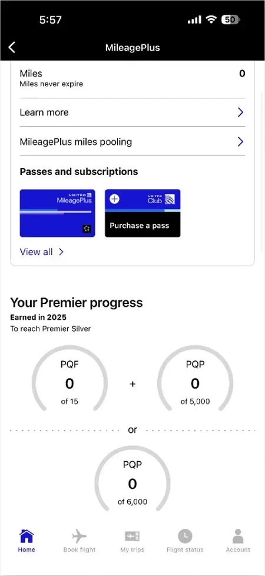
Current 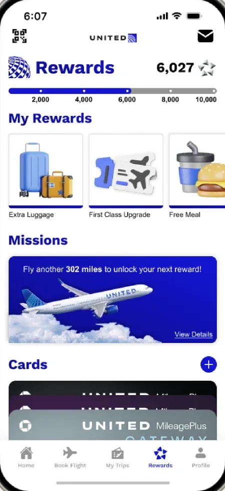
Updated -
Testing
Test With Travelers, Then Iterate.
We tested the prototype with 15+ users and collected 18 written critiques at our second checkpoint. Critiques asked for more contrast instead of shades of grey, consistent headers and spacing across screens, and questioned whether a friends feed fits what people open an airline app for.
Final Design
The finished app: my rewards section, the Explore feed and the new boarding pass.
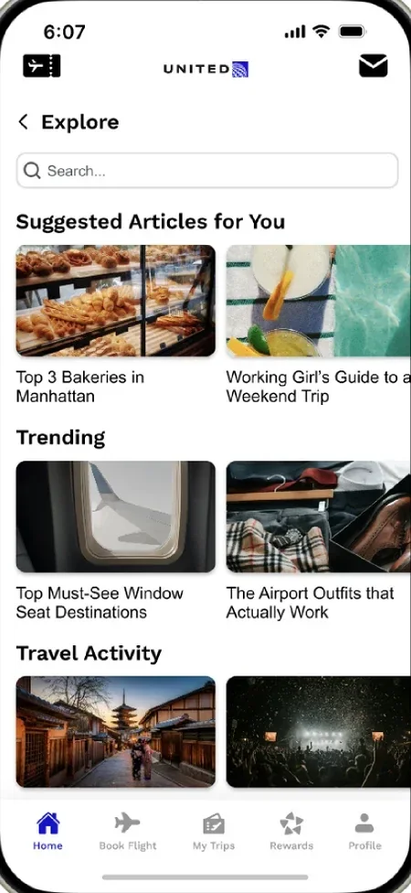
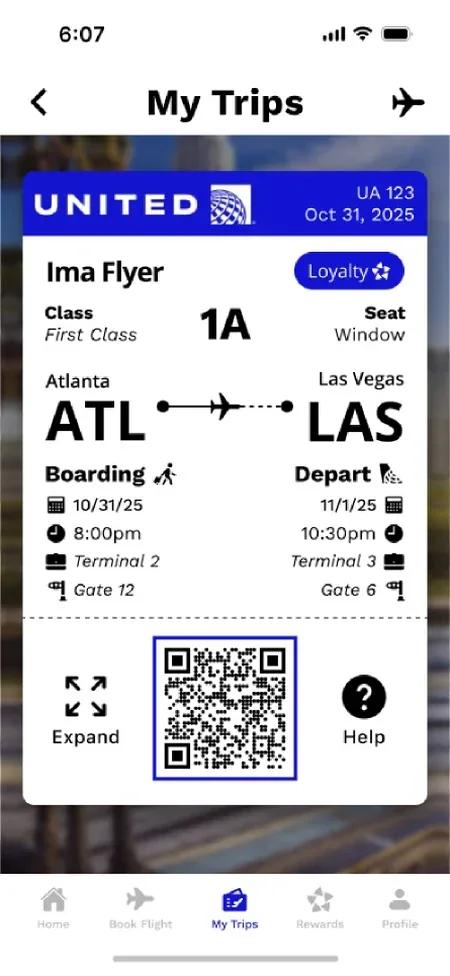
Screen 1 of 3
Show the Next Useful Action
Pair the balance with rewards and missions, so points aren’t a dead end.
Make Progress Visible
A point tracker and missions show how close the next reward is.
Before & After
How each part of the app changed, across the whole team’s redesign.
-
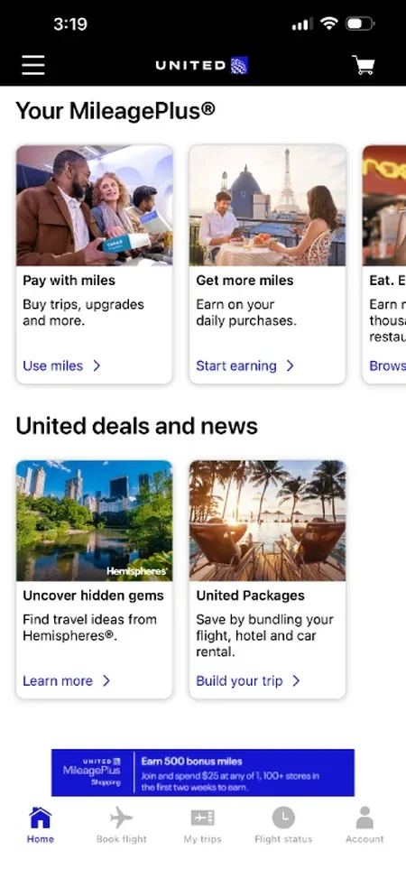
Current 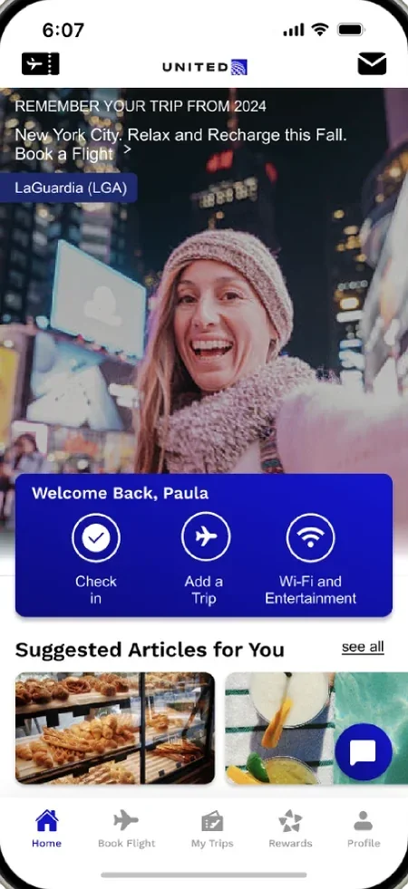
Updated Home Explore 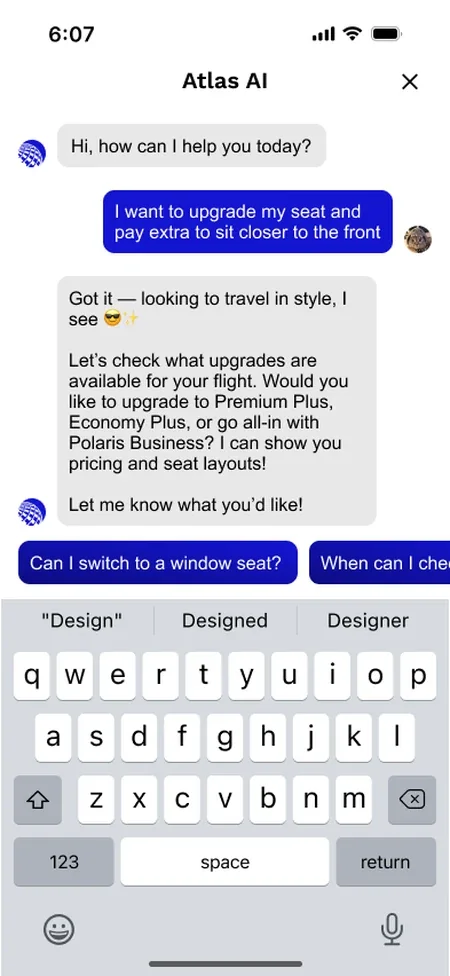
Atlas AI Assistant Home
Designed by Kristine
Before: Promotions and deals fill the screen.
After: Trip memories, a dashboard for check-in and trips, suggested articles, an Explore page, a friends feed for sharing trips, and an AI travel assistant.
-
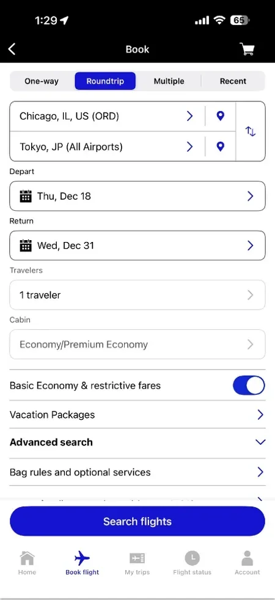
Current 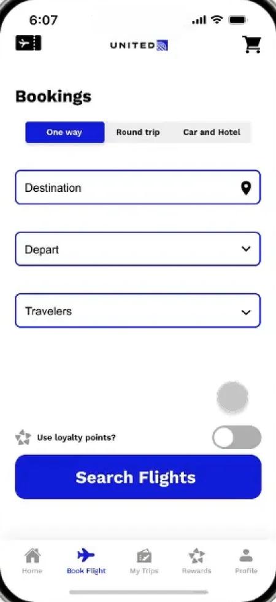
Updated Booking
Designed by Ryan
Before: A long form, with fare toggles and extra options mixed together.
After: One short form for one-way, round trip, or car and hotel, with a toggle to pay with points.
-
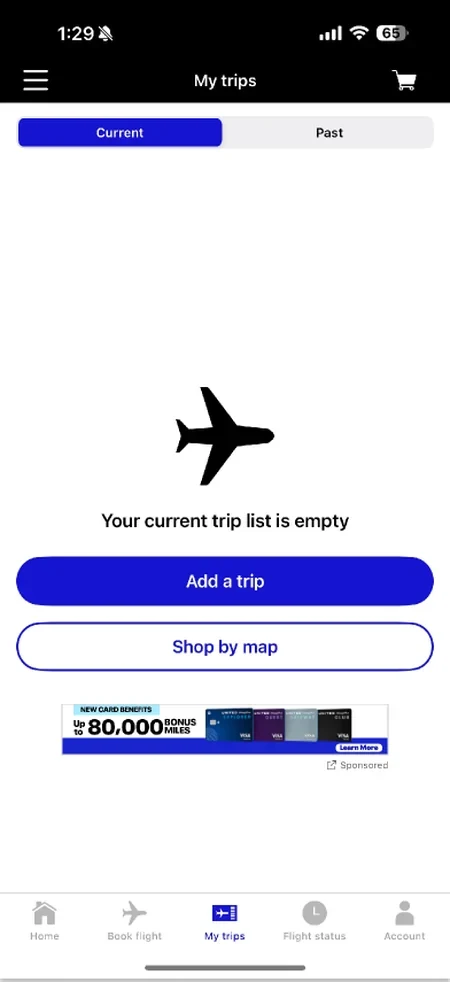
Current 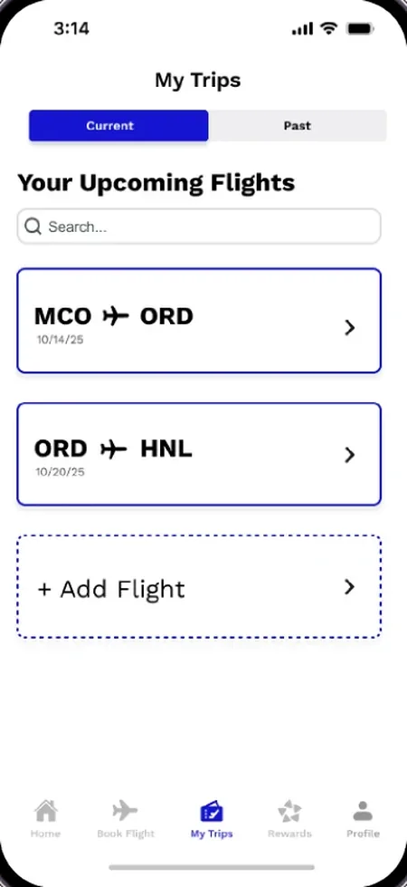
Updated My Trips
Designed by Madison
Before: An empty trip list, filled with an ad.
After: Upcoming flights and flight history, with search and a simpler Add Flight.
-
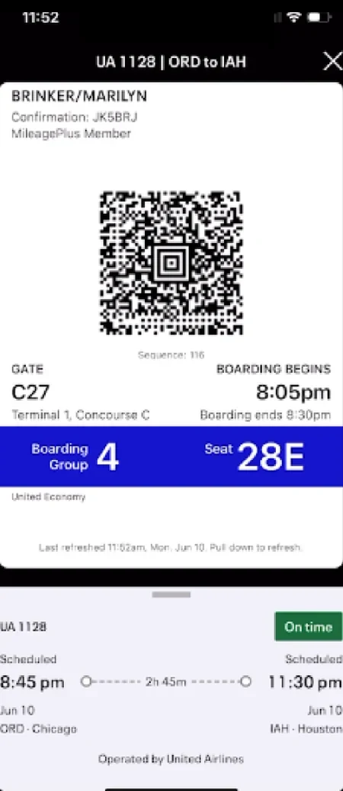
Current Updated 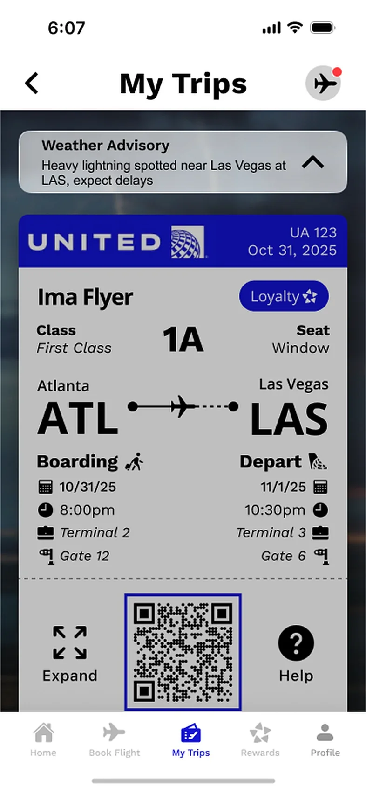
Travel Alerts 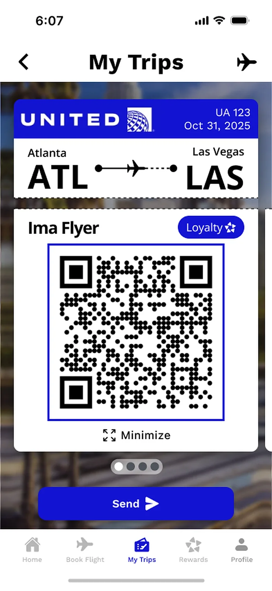
Expanded QR Boarding Pass
Designed by Sara
Before: Boarding details are hidden and hard to scan.
After: Gate, seat and boarding time up front, loyalty status and travel alerts like weather delays on the pass, and a QR code to expand or send.
-
Current Updated Rewards 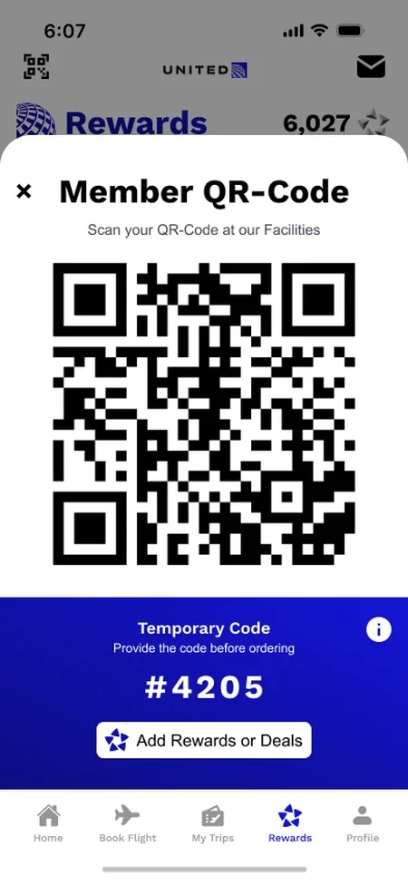
Member QR Code 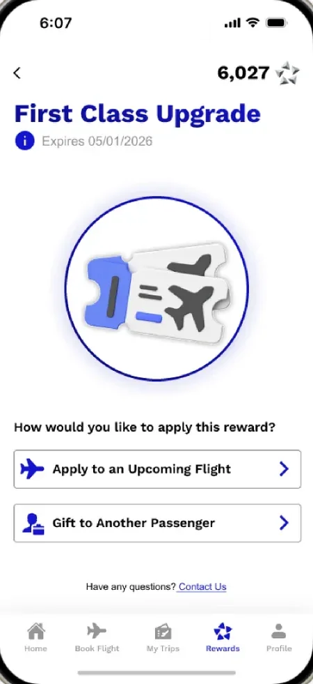
Upgrade Rewards My Design
Before: Several points systems and scattered offers.
After: One point tracker, rewards to claim, missions and cards, a member QR code to scan at United facilities, and rewards ready to use on a flight or gift.
-
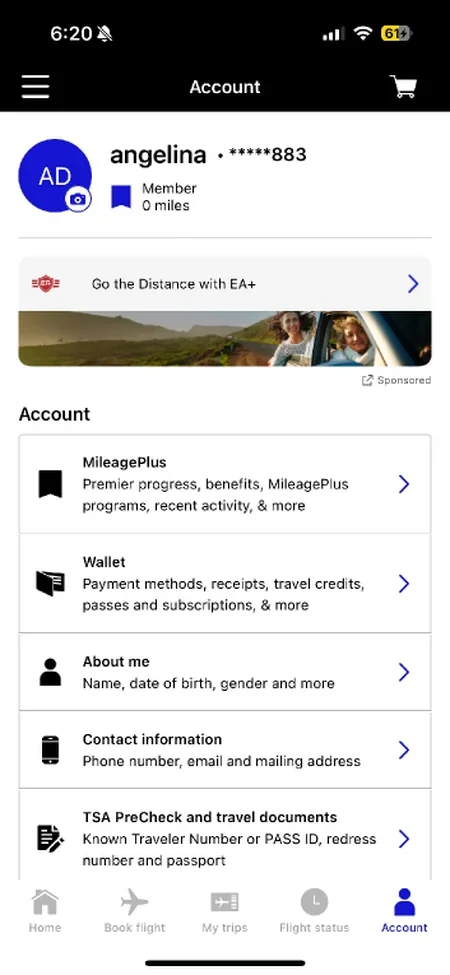
Current 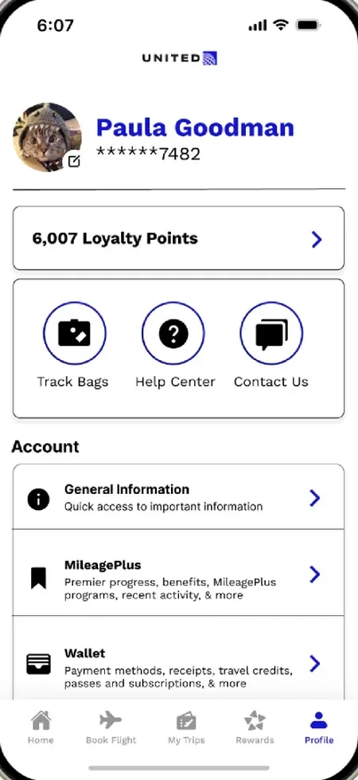
Updated Profile
Designed by Angelina
Before: Account resources and help buried in a long list.
After: Loyalty points, bag tracking, help and contact up top.
Outcome & Reflection
What Was Delivered
A research synthesis, a new five-tab structure, and a high-fidelity Figma prototype covering home, booking, trips, boarding, rewards and profile, presented to stakeholders at the end of the semester.
What Comes Next
Weigh each new feature against what travelers open the app for. Critique questioned the friends feed and removing home-screen ads entirely; both are worth testing against United’s business goals.